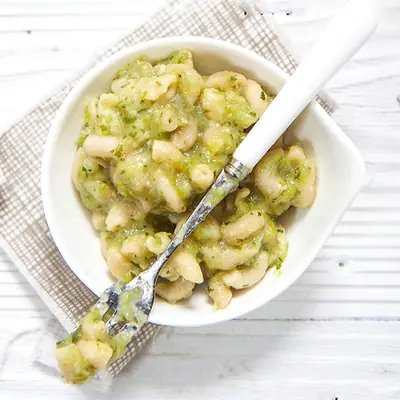

Green Veggie Pasta Sauce for Baby

Ingredients
- 1/2 small zucchini
- 6 asparagus spears
- 1 leek (white and light green parts only)
- 8-10 basil leaves
- 1/2 lemon, (juiced)
- 1/3 cup small shaped pasta
- 2/3 cup water
- sprinkle of parmesan, (optional)
Steps
- Chop the zucchini, asparagus and leek into 1" pieces. Roughly chop the basil.
- Fill one basket with the zucchini, asparagus and leek. Using the measuring bowl, fill the correlating heating tank to a level 3 with water.
- Fill the grain insert with the pasta and water. Using the measuring bowl, fill the correlating heating tank to a level 3 with water.
- Lock both bowls in place and turn babycook on.
- Run steam cycle for both baskets.
- Discard cooking juices and transfer the contents of the zucchini basket along with the basil and lemon juice into the blender and pulse in 3 second bursts until you reach your desired consistency.
- Mix 1/2 of the vegetable puree with the cooked pasta and store the remaining puree for future use.
- Sprinkle with parmesan and serve.
- Chop the zucchini, asparagus, and leek into 1" pieces. Roughly chop the basil.
- In a medium saucepan, bring 2" of water to a boil over medium heat. Place the zucchini, asparagus, and leek in a steamer basket over the boiling water, cover, and cook for 15 minutes.
- Meanwhile, cook pasta according to package directions.
- Transfer the zucchini, asparagus, and leek to a blender or food processor, add basil and lemon juice. Puree in short bursts until you reach your desired consistency.
- Mix 1/2 of the vegetable puree with the cooked pasta and store the remaining puree for future use.
- Sprinkle with parmesan and serve.
Recipe by Baby Foode, from Baby Foode. Saved here for personal use; the original has the full notes, tips and photos. Open original